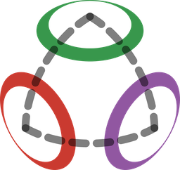
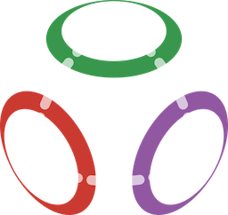

Manopt.jl
Optimization on Riemannian manifolds
Efficient algorithms for minimizing a function on a Riemannian manifold


Generic Implementations
Algorithms are implemented generically for any Riemannian manifold, based on the interface from ManifoldsBase.jl.
Composable
All components are modular, from problems, objectives, and solver states to stopping criteria and step sizes, and can easily be combined and reused. Points and tangent vectors can be represented by arbitrary Julia types.
Efficient
All methods support in-place evaluation of both the objective and the manifold operations. An advanced and easy-to-use caching system avoids unnecessary re-evaluations. Together with ManifoldsGPU.jl, computations can also run on the GPU.
Well-documented and -tested
All algorithms are documented, covering their theoretical background with references to the literature as well as all their options and keyword arguments.
Customizable
All solvers provide recording, debug, and callback capabilities, and objectives can count their internal function calls.
Use with Manifolds.jl
If you have a specific manifold in mind, check whether it is already available in Manifolds.jl or, for Lie groups, in LieGroups.jl.
Manopt.Manopt — Module
🏔️ Manopt.jl: optimization on Manifolds in Julia.
- 📚 Documentation: manoptjl.org
- 📦 Repository: github.com/JuliaManifolds/Manopt.jl
- 💬 Discussions: github.com/JuliaManifolds/Manopt.jl/discussions
- 🎯 Issues: github.com/JuliaManifolds/Manopt.jl/issues
For a function $f:\mathcal M → ℝ$ defined on a Riemannian manifold $\mathcal M$, algorithms in this package aim to solve
\[\operatorname*{arg\,min}_{p ∈ \mathcal M} f(p),\]
or in other words: find the point $p$ on the manifold $\mathcal M$, where $f$ reaches its minimal function value.
Manopt.jl provides a framework for optimization on manifolds as well as a library of optimization algorithms in Julia. It belongs to the Manopt family, which includes Manopt (Matlab) and pymanopt.org (Python), both aiming to provide the same framework in the flavor of the corresponding language.
Get Started
To get started with Manopt.jl, start Julia and type
] add Manoptto install the package. Then you can dive directly into optimization on manifolds, following the 🏔️ Get started with Manopt.jl tutorial.
Manopt.jl makes it easy to use an algorithm for your favorite manifold as well as a manifold for your favorite algorithm. It already provides many manifolds and algorithms, which can easily be enhanced, for example to record certain data or debug output throughout iterations.
If you use Manopt.jl in your work, please cite the following:
Bergmann, R. (2022). Manopt.jl: Optimization on Manifolds in Julia, Journal of Open Source Software, 7(70), 3866.
doi: 10.21105/joss.03866
Bergmann:2022 (BibLaTeX)
@article{Bergmann2022,
Author = {Ronny Bergmann},
Doi = {10.21105/joss.03866},
Journal = {Journal of Open Source Software},
Number = {70},
Pages = {3866},
Publisher = {The Open Journal},
Title = {Manopt.jl: Optimization on Manifolds in {J}ulia},
Volume = {7},
Year = {2022},
}To refer to a certain version or the source code in general, cite for example
Bergmann, R. (2026). Manopt.jl, Zenodo.
Manoptjl-zenodo-mostrecent (BibLaTeX)
@software{manoptjl-zenodo-mostrecent,
Author = {Ronny Bergmann},
Copyright = {MIT License},
Doi = {10.5281/zenodo.4290905},
Publisher = {Zenodo},
Title = {Manopt.jl},
Year = {2026},
}for the most recent version or a corresponding version specific DOI, see the list of all versions.
If you are also using Manifolds.jl, please consider citing
Axen, S. D., Baran, M., Bergmann, R., Rzecki, K. (2023). Manifolds.jl: An Extensible Julia Framework for Data Analysis on Manifolds, ACM Transactions on Mathematical Software, Volume 49, Issue 4, Article No. 33, pages 1–23.
doi: 10.1145/3618296, arXiv: 2106.08777
AxenBaranBergmannRzecki:2023 (BibLaTeX)
@article{AxenBaranBergmannRzecki:2023,
AUTHOR = {Axen, Seth D. and Baran, Mateusz and Bergmann, Ronny and Rzecki, Krzysztof},
ARTICLENO = {33},
DOI = {10.1145/3618296},
JOURNAL = {ACM Transactions on Mathematical Software},
MONTH = {dec},
NUMBER = {4},
TITLE = {{Manifolds.jl}: An Extensible {J}ulia Framework for Data Analysis on Manifolds},
VOLUME = {49},
YEAR = {2023}
}Main features
Optimization algorithms (solvers)
For every optimization algorithm, a solver is implemented based on an AbstractManoptProblem that describes the problem to solve and its AbstractManoptSolverState that sets up the solver and stores values that are required between iterations or for the next iteration.
Manifolds
This project is built upon ManifoldsBase.jl, a generic interface to implement manifolds. Certain functions are extended for specific manifolds from Manifolds.jl, but all other manifolds from that package can be used here, too.
The notation in the documentation aims to follow the notation of these packages.
Algorithm exploration
To visualize and interpret results, Manopt.jl provides a system to get debug output during the iterations of an algorithm as well as record capabilities, for example to record a specified tuple of values per iteration, most prominently RecordCost and RecordIterate. Take a look at the 🏔️ Get started with Manopt.jl tutorial on how to easily activate this.
Literature
If you want to get started with manifolds, a recommended reference is the book [Car92], and if you want to directly dive into optimization on manifolds, good references are [AMS08] and [Bou23], which are both available online for free.
- [AMS08]
- P.-A. Absil, R. Mahony and R. Sepulchre. Optimization Algorithms on Matrix Manifolds (Princeton University Press, 2008), available online at press.princeton.edu/chapters/absil/.
- [Bou23]
- N. Boumal. An Introduction to Optimization on Smooth Manifolds. First Edition (Cambridge University Press, 2023).
- [Car92]
- M. P. do Carmo. Riemannian Geometry. Mathematics: Theory & Applications (Birkhäuser Boston, Inc., Boston, MA, 1992); p. xiv+300.